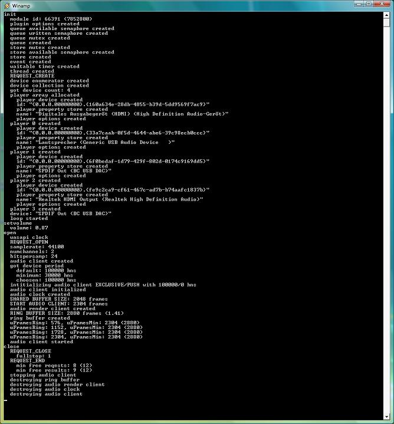

"Yet Another (WA)SAPI Output Plugin for Winamp YASAPI" (out_yasapi) is free software: you can redistribute it and/or modify it under the terms of the GNU General Public License as published by the Free Software Foundation, either version 3 of the License, or (at your option) any later version.
"Yet Another (WA)SAPI Output Plugin for Winamp YASAPI" (out_yasapi) is distributed in the hope that it will be useful, but WITHOUT ANY WARRANTY; without even the implied warranty of MERCHANTABILITY or FITNESS FOR A PARTICULAR PURPOSE. See the GNU General Public License for more details.
You should have received a copy of the GNU General Public License along with "Yet Another (WA)SAPI Output Plugin for Winamp YASAPI" (out_yasapi). If not, see <http://www.gnu.org/licenses/>.
The "Yet Another (WA)SAPI Output Plugin for Winamp" (YASAPI) utilizes the "Windows Audio Session API" (WASAPI). WASAPI's exclusive mode for rendering audio is a native way on Windows to render audio undisturbed, similar to Steinberg's "Audio Stream Input/Output" (ASIO). The YASAPI output plugin may serve as a replacement for any other Winamp output plugin.
PLEASE NOTE THAT THIS PROJECT IS AN EXPERIMENTAL RATHER THEN AN INDUSTRIAL STRENGTH EFFORT. THIS PROJECT IS NOT FOR YOU. IT IS FOR ME IN ORDER TO LEARN SOMETHING. IF THERE IS SOMETHING ALONG THE WAY I CAN DO FOR YOU THAT'S FINE.
| Home: | http://out-yasapi.sourceforge.net/ | |
| Project: | http://sourceforge.net/projects/out-yasapi/ | |
| Download: | http://sourceforge.net/projects/out-yasapi/files/out-yasapi/ | |
| Winamp Forum: | http://forums.winamp.com/showthread.php?t=380396 | |
| Input Plugin: | http://in-ffsox.sourceforge.net/ |
| 2016-07-30 | 1.7.24 |
|
| 2016-07-03 | 1.7.18 |
|
| 2016-06-30 | 1.7.17 |
|
| 2016-06-30 | 1.7.15 | Fixed several bugs regarding the implementation of the device specific option Extend to 24 Bit. This option is apperently not equivalent to Winamp -> Options -> Preferences -> Playback -> Playback -> Allow 24bit because the latter reduces bit deps to 16 bit if un-checked otherwise to 24 bit. Bit depth is never extended to 24 bit. YASAPI extends bit depth to 24 bit those enabling playback on devices which does support 24 bit WASAPI playback but not 16 bit WASAPI playback. |
| 2016-06-27 | 1.7.10 | Added a device specific option in order to define whether YASAPI should promote 8/16 bit input to 24 bit. This is not really necessary because the same effect can be achieved by enabeling Winamp -> Options -> Preferences -> Playback -> Playback -> Allow 24bit but is provided on user request |
| 2016-06-23 | 1.7.4 |
|
| 2016-06-21 | 1.7.1 | Improved migrating the plug-in from an un-plugged default device to the new default device when playing. |
| 2016-06-20 | 1.7.0 | (Limited) support for un-plugging the default device (as configured via System control) when playing. |
| 2016-06-19 | 1.6.14 |
|
| 2016-06-14 | 1.6.11 | Fixed combining pause with flush (skip). |
| 2016-06-13 | 1.6.9 |
|
| 2016-06-12 | 1.6.8 | For the debug version it may be configured that the trace is written to a file in the AppData/Winamp/Plugin directory rather then dispalying it in a console. |
| 2016-06-12 | 1.6.7 | In gapless mode, when a playlist ends the device is not released. It is waiting for the next track to start. This situation is un-distinguishable from an ordinary underflow situation and hence playback ends in an undeflow state. This may cause trouble when in such a situation the user decides to change the output plugin (via configuration). This new version applys to exact this situation: If in case the user changes the output plugin and this plugin is found in an underflow state this plugin is closed (and hence the device released). |
| 2016-06-12 | 1.6.6 | Fixes regrding gapless playback. |
| 2016-06-12 | 1.6.5 |
|
| 2016-05-29 | 1.6.4 | Added a common option in order to define whether 4, 6, or 8 channels should be interpreted as qadrophnic (3.1), 5.1, or 7.1 (disabled) or sorround (3.1 sorround), 5.1 sorround, or 7.1 sorround (enabled), respectively. |
| 2016-05-26 | 1.6.3 |
|
| 2016-05-22 | 1.6.0 |
|
| 2016-05-17 | 1.5.4 | Solved the dead-lock caused by saving the configuration. |
| 2016-05-17 | 1.5.1- 1.5.3 |
Improved dealing with draining the ring buffer and end of track (eot). |
| 2016-05-16 | 1.5.0 |
|
| 2016-04-09 | 1.0.7 | In order to have YASAPI in a well defined state from the very first beginning, reset the IAudioClient interface at start-up. |
| 2016-01-13 | 1.0.6 |
|
| 2016-01-09 | 1.0.0 |
|
| 2016-01-03 | 0.16.0 |
|
| 2015-12-21 | 0.15.0 | Brought back, as an option, a call to IAudioClient::IsFormatSupported which is disabled by default. |
| 2015-12-10 | 0.14.1 | Increased default ring buffer size to 2.5. |
| 2015-12-08 | 0.14.0 |
|
| 2015-12-06 | 0.12.0 | Fixed interplay with the "NotSo Fatso" input plugin. |
| 2015-12-04 | 0.11.0 |
|
| 2015-11-29 | 0.10.0 |
|
| 2015-11-23 | 0.9.1 |
|
| 2015-11-22 | 0.9.0 |
|
| 2015-11-02 | 0.8.3 |
|
| 2015-10-31 | 0.8.2 |
|
| 2015-10-30 | 0.8.1 | New share mode "automatic" which is similar to exclusive except that it falls back to shared in case exclusive fails. |
| 2015-10-29 | 0.8.0 |
|
| 2015-10-26 | 0.7.1 |
|
| 2015-10-26 | 0.7.0 |
|
| 2015-10-03 | 0.6.1 | Corrected a silly bug in testing for share mode. |
| 2015-10-03 | 0.6.0 | Add AUDCLNT_STREAMFLAGS_AUTOCONVERTPCM flag when in shared mode (doesn't have any effect on Vista). |
| 2015-02-14 | 0.5.0 |
|
| 2015-01-30 | 0.4.0 |
|
| 2015-01-25 | 0.3.0 |
|
| 2015-01-24 | 0.2.1 |
|
| 2015-01-24 | 0.2.0 |
|
| 2015-01-23 | 0.1.0 | Initial release. |
According to Microsoft:
The Core Audio APIs were introduced in Windows Vista. This is a new set of user-mode audio components provides client applications with improved audio capabilities. These capabilities include the following:
- Low-latency, glitch-resilient audio streaming.
- Improved reliability (many audio functions have moved from kernel mode to user mode).
- Improved security (processing of protected audio content takes place in a secure, lower-privilege process).
- Assignment of particular system-wide roles (console, multimedia, and communications) to individual audio devices.
- Software abstraction of the audio endpoint devices (for example, speakers, headphones, and microphones) that the user manipulates directly.
https://msdn.microsoft.com/en-us/library/windows/desktop/dd370784%28v=vs.85%29.aspx
Of special interest is that there is an exclusive mode for rendering audio, i.e. there is a mode where an application has exclusive access to the audio device without being disturbed by third parties.
The aim of the YASAPI plugin is to make the WASAPI exclusive mode for audio rendering available to the users of Winamp.
The name of the plugin was choosen because there are already at least two WASAPI output plugins for Winamp:
There are two sides the YASAPI plugin has to take into account:
The implementation on the WASAPI side follows along the lines of an example provided by Microsoft. The startegy shown in this example is not only applicable for shared mode streams but also for exclusive mode ones, i.e. not the share mode should be emphasized but what is known as the push model. There is also an example demonstrating the pull model in conjunction with the exclusive mode. In that sence there are four strategies:
The YASAPI plugin implements the first two strategies, i.e. the ones based on the push model.
The push model, in principle, works as follows:
But the YASAPI plugin not only has to take into account the
WASAPI side (the loop consisting of sleeping and writing to the
audio device) but also the Winamp side because Winamp provides
the audio samples which should be played in an completely
unpredictable way.
The YASAPI plugin decouples the two sides by means of a
ring or circular buffer.
That way,
According to step 2 of the push model sketched above,
it shoud become clear that the ring buffer should be at least as
large (or larger) as the buffer the plugin's WASAPI component shares
with the audio device.
The YASAPI plugin comes with a configuration dialog which is described
in the following. The dialog's top region presents the two
most important parameters "Mode" (exclusive or share) and "Strategy" (push or pull)
Below those two parameters you find a tab-control consisting of four pages,
The tab-control's first page looks as follows:
It let's you configure
On the next page there are the following per device options:
On the final page you can configure the following per device buffer sizes:
From the above sketch of the push model it shold be clear
that the following relation holds (which is enforced by the configuration dialog):
Please note that no option takes effect before hitting the OK button.
In case something went wrong you may be interested in some more
information. In order to utilize this there is a debug version
of the plugin (distinguished by a lower case "d" at the and of
the name, i.e. out_yasapid.dll) available from the
download site.
Do the following:

The debug console.
You can get rid of the debug console by choosing the respective
"Console" option from the debug YASAPI plugin's configuration dialog:
The following debug options can be configured:
A big "thank you" goes out
The following prerequisites are needed in order to build YASAPI
from the sources:
4. Configuration
minimum size of the buffer shared with the device (provided by WASAPI)
<= size of buffer shared with the device
<= number of samples in the ring buffer before start playing
<= size of ring buffer
As a rule of thumb all buffer sizes should be 1.0 except the ring buffer's
size which should be just a small amount greater then 1.0.
5. Debug
5. Compiling from Source
5.1 Prerequisits